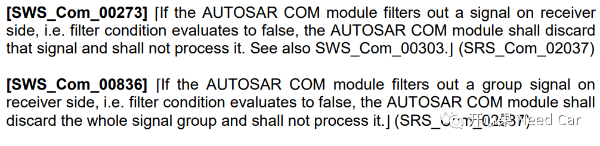
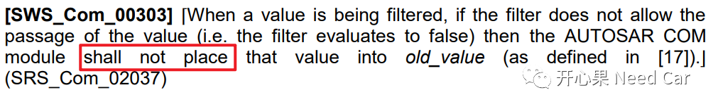
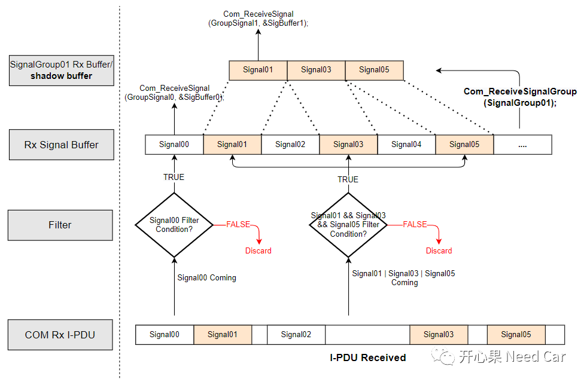
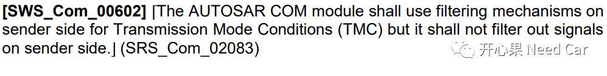
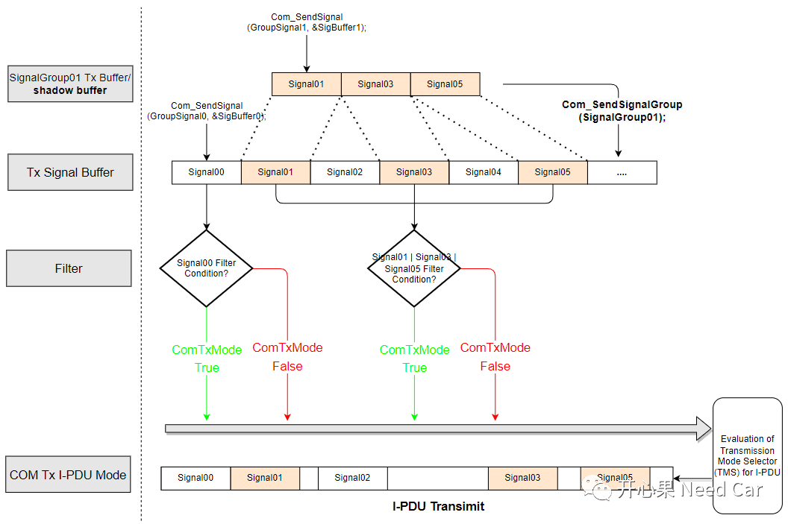
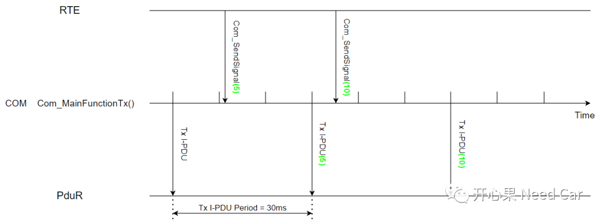
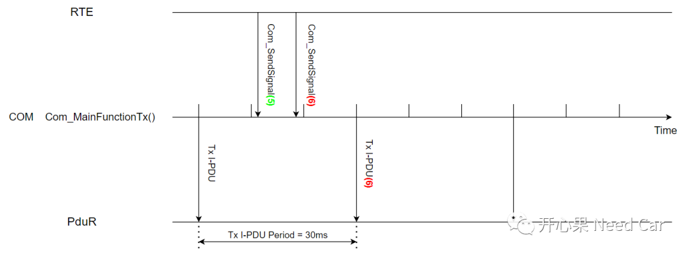
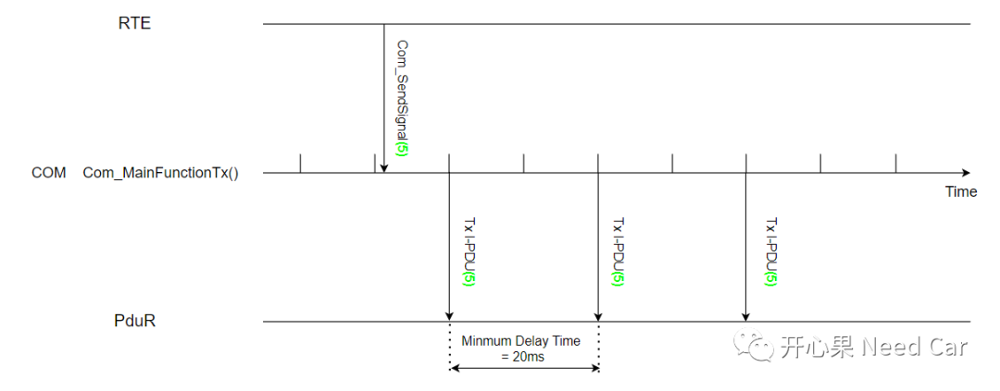
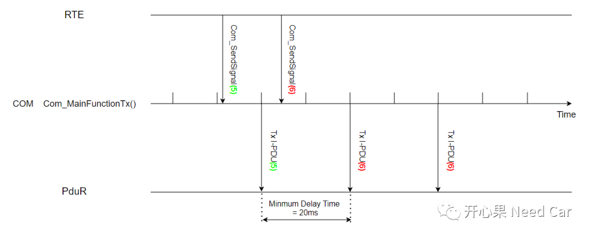

"走得越远见识越多，认识的人越多，你就越能体会到，人这一辈子你真的在意的，同时又在意你的，就那么几个。这几个就是你全部的世界。三两知己，爱人在侧，父母康健，听起来平平无奇，但已经是中等偏上的人生答卷了。"
--《人世间》“李潈”评论
QA1、Rx Signal Filter有何用？
答：Rx Signal Filter有什么用呢?通信开发中，大家应该碰到过这样的问题：信号阈值判断。举例：车速信号（Vehicel_Signal）用一个uint16数据类型表示，Vehicel_Signal有效取值范围：0~300Km/h，如果Vehicel_Signal ＞ 300Km/h，则丢弃该信号，保持上一次的有效值。所以，使用Rx Signal Filter，即可处理类似的问题。
Step1、COM模块收到一个I-PDU，该I-PUD包含5个信号：Signal00、Signal01、Signal02、Signal03、Signal05。其中Signal01、Signal03、Signal05属于SignalGroup01;
Step2、在COM层，将接收到的I-PDU拆分成Signal，如果信号有Filter Condition，则进行Filter Condition判断；
Step3、如果Filter Condition = FALSE，则丢弃该信号，对应的Rx Signal Buffer不更新。如果Filter Condition = TRUE，则更新信号对应的Rx Signal Buffer；
Autosar规范对Filter Condition的解释如下所示：

Autosar规范中解释Signal Filter Condition = False，如果这个Signal不在SignalGroup中，该信号对应的接收缓存区数值无需更新；如果这个Signal在SignalGroup中，该信号组对应的接收缓存区数值无需更新，即：保存上次值，如下所示：

Step4、如果信号不属于任何的SignalGroup，上层可以直接调用Com_ReceiveSignal()接口，从Rx Signal Buffer获取信号数据。如果信号属于某个SignalGroup，则需要通过Com_ReceiveSignalGroup()接口，将信号数据从Rx Signal Buffer缓存区Copy到SignalGroup Rx Buffer(shadow buffer)，之后上层再通过Com_ReceiveSignal()接口读取信号值。

QA2、Tx Signal Filter与Tx Mode有何关系？
答：从QA1中，可以知道Rx Signal Filter可以检查信号阈值。那么Tx Signal Filter能否也检查信号阈值呢？Autosar规范给出了解释，如下所示：


QA3、ComTxModeTrue、ComTxModeFalse使用场景？
答：为什么一个Tx I-PDU会有ComTxModeTrue、ComTxModeFalse发送模式呢？一个Tx I-PDU的发送类型有：DIRECT、MIXED、PERIODIC。
DIRECT：事件型，比如：连续发送3次，发送最小间隔20ms。
QA4、Tx Signal的发送行为注意事项
答：上层通过RTE调用Com_SendSignal()接口，更新需要发送Signal数值，注意：此时信号数值只是更新到了发送缓冲区。信号值的发送，依赖信号所在的Tx I-PDU周期。同时，COM层的发送主函数Com_MainFunctionTx()周期判断每一个Tx I-PDU周期到时与否，如果Tx I-PDU周期到时，调用PduR的发送接口发送Tx I-PDU.





参考资料
SIMPLE TITLE
AUTOSAR_SWS_COM.pdf
往期精彩回顾